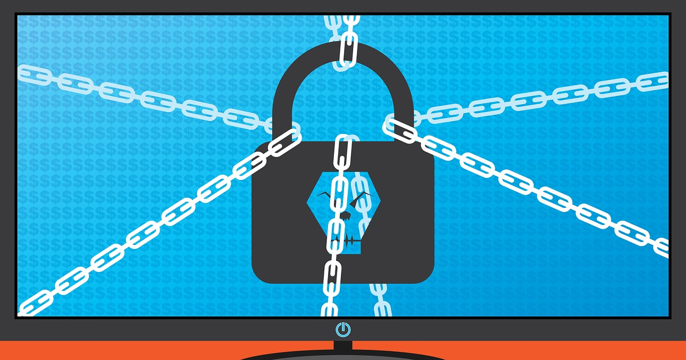

Evolution of Ransomware and How to Protect Yourself

What Is Ransomware?
Imagine logging into your computer one day only to find that all your files—pictures, homework, and even your favorite games—are locked. A scary message pops up saying you have to pay money to get them back. This is ransomware, a type of malware (malicious software) used by cybercriminals to extort money from victims.
A Brief History of Ransomware
Ransomware has come a long way since it first appeared. In 1989, the first ransomware, called the AIDS Trojan, was distributed through floppy disks. The ransom? A payment sent by mail!
Fast forward to the 2010s, and ransomware evolved to target businesses, hospitals, and even government systems. Hackers started demanding payments in Bitcoin, a type of cryptocurrency, because it’s harder to trace. One of the most infamous ransomware attacks, WannaCry in 2017, infected hundreds of thousands of computers worldwide in just a few days.
Today, ransomware is more sophisticated. Hackers may threaten to leak sensitive data online if the ransom isn’t paid. This double-threat tactic makes it even more dangerous.
How Does Ransomware Spread?
Ransomware can sneak into your system in many ways:
- Phishing Emails: Hackers send fake emails designed to look legitimate, tricking you into clicking a malicious link or downloading a harmful attachment.
- Malicious Websites: Some websites are set up specifically to install malware on your device. These can be disguised as free download sites, pop-up ads, or even fake news articles.
- Software Vulnerabilities: When your software isn't updated, it can contain bugs or weak points that hackers exploit to gain access to your system.
How to Protect Yourself
Here are some easy ways to keep ransomware out of your life:
- Think Before You Click: Don’t click on links or open attachments from unknown sources.
- Keep Software Updated: Regularly update your operating system, browser, and apps.
- Use Antivirus Software: Install and regularly update antivirus software.
- Backup Your Files: Save important files to an external drive or cloud storage.
- Avoid Public Wi-Fi: Use a VPN if you need to connect to a public Wi-Fi network.
What If You’re Attacked?
If you ever become a victim of ransomware:
- Don’t Pay the Ransom: There's no guarantee the hackers will unlock your files.
- Disconnect Your Device: Unplug your device from the internet to stop the spread of malware.
- Report the Incident: Contact the authorities like the FBI’s Internet Crime Complaint Center.